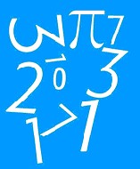

Projetos

Ciencias da natureza
Atividade sobre matéria escura, onde foi realizada por mim e alguns colegas.
Ver projeto

Matematica
Esse foi um projeto interessante, pois foi um tema aberto, tratamos de um formulario de estatisticas sobre a saude mental na pandemia.
Ver projeto
Ciencias humanas
Foi feita uma pesquisa sobre suporpotencias, pesquisando sua cultura economia etc...
Ver projetoPojeto do ano
O projeto mais impotante do ano, onde estamos ciando uma empresa para fora, com intuito de fornecer máquinas virtuais por um preço acessivel.
Ver projeto